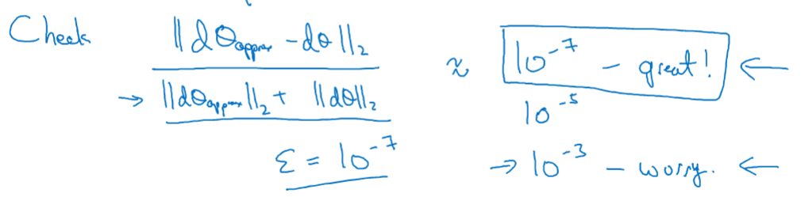

02.改善深层神经网络
深度学习_吴恩达 深度学习 吴恩达
02.改善深层神经网络
第一周
1-1 训练/开发/测试集
以前一般使用7:3划分训练集测试集或6:2:2 。大数据下通常需要用验证集快速验证多种算法的优劣，所以可以去小一些。
百万数据集98：1：1%
确保验证集合测试集的数据来自同一分布
1-2 偏差/方差
欠拟合：偏差过高 过拟合：方差过高
高方差：训练集和验证集的错误率相差过大
高偏差：与人类等实际分类效果对比太差
如果可以确定最优方差 然后去和偏差方差作比较来评价模型
1-3 机器学习基础
High bias?
- Bigger network
- Train longer
- NN architecture search (可选)
拟合训练集后，再看 High variance? - More data
- regularization
- NN architecture search (可选)
1-4 正则化
L1 正则化 稀疏，但没有压缩模型减少内存
L2 正则化又称权重衰减(Weight Decay) 公式可见权重在减小
1-5 为什么正则化可以减少过拟合
L2 正则化防止过拟合 直观经验是权重越多接近于0 模型越简单(存疑)
以Sigmoid为例 当权重过小时候，Sigmoid是接近线性的，整个网络是线性的从而使模型变为简单来减少过拟合
1-6 Dropout(Inverted dropout)
d3 = np.random.rand(a3.shape[0], a3.shape[1]) < keep_prob
a3 /= keep_prob
以Hinton论文中提出的Dropout在测试集上是将概率应用到神经元的输出边上
为了简化测试集的操作，在训练时候每个神经元的输出都降低为权重 这样就不需要在测试集做额外操作
1-7 理解Fropout
Dropout 有效性体现：
- 等效正则化，使网络更简单
- 神经元不在完全依赖特定的输入神经元
可以设置不同层的dropout rate 设置为1表示不使用dropout
Dropout主要同于计算机视觉(CV)，当过拟合的时候可以在使用
缺点：
- 损失函数的定义不对明确
- 调试困难(先固定为1， J递减再开启)
1-8 其他正则化技术
- Data Augmentation 数据增强 如 图片旋转、裁剪、扭曲
- early stooping have a mid-size rate
通常的训练步骤：
- 优化代价函数J(GD/ Momentum/ RMRprop /Adam)
- 避免过拟合(正则化) | 减少方差(正交化)
early stooping 不能独立处理问题1 2
1-9 正则化输入 Normalization training sets
0均值 1方差
当特征范围不一致时候使用归一化，加速下降
1-10 梯度消失和爆炸
1-11 神经网络的权重初始化
设置=np.random.rand(shape)*np.sqrt(1/n[l-1])
最后一项
tanh 使用Xavier 初始化，ReLU使用公式2
Xavier 初始化，公式：
公式：
此超参数的调节优先等级比较低
1-12 梯度的数值逼近
双边误差法：
1-13 梯度检验
效果great 效果wrong

1-14 梯度检验经验
- Dont use in training - only to debug
- If algorithm fails grad check, look at components to try to identify bug
- Rember regularization
- Doesn’t work with dropout
- Run ai random initialization;perhaps again after some training
第一周第一次作业
权重初始化作用：
- 加速梯度收敛
- 增加泛化能力
权重初始化对比
- 0
- 随机
- HE三种方式
结果逐渐变好 其中He Initialization (Xavier Initialization变种 参考)
权重为0 不下降模型无效
权重过大，没有效果
第一周第二次作业
正则化技术很有效
第一周第三次作业
梯度检验：
第二周
2.1 Mini-batch梯度下降法
默认梯度下降是将所有数据进行计算实现一部梯度下降
分批次 :
同样：
mini batch
表示训练集中第个训练样本
表示神经网络的层数
表示不同的mini batch 维度
# 遍历批次 每批次使用向量化
for t=1,....5000:{
# 使用X^{t} Y^{t} 实现 一步 梯度下降
Forward prop on X^{t}
Z^[1] = W^[1]X^{t} + b^[1]
A^[1] = g[1](Z^[1])
.
.
.
A^[l] = g^[l](Z^[l])
Compute cost J^{t}
Back prop
update W,B
}
2.2 理解mini-batch梯度下降法
损失表现
mini-batch 的成本函数是震荡下降的
选择mini-batch size
Tips:
- 将mini-batch size 设置为m : Batch Gradient Descend
- 将mini-batch size 设置为1 : stochastic gradient descent(随机梯度下降)
batch gradient descend的cost轨迹，相对噪声低，幅度大
stochastic gradient descent的cost轨迹，噪声大，徘徊在最小值 缺点：失去了向量化的加速处理
一般使用合适batch size的mini-batch 其优点：
- 向量化
- 不全部使用数据集
size 选取：
- 样本集小直接使用batch gradient descent ()
- mini-batch size 一般为 [64，128，256，512] 一般为2的次方
- 保证 与CPU/GPU内存相适应
2.3 指数加权平均
指数加权平均(exponentially weighted averages)又称指数加权移动平均(exponentially weight moving averages)
以温度为例,
…
效果如图：
当
当
当
对比效果图如下：
红色0.9(10天平均温度) 绿色0.98(50天平均温度) 黄色0.5(2天平均温度)
平均天数越大图像越平滑，越偏移
平均天数越小噪声越大
选定参数对模型有一定的影响
2.4 理解指数加权平均
…
当时，需要指数50能达到，即可以看作是平均了50天温度可以使用
2.5 指数加权平均的偏差修正(bias correction)
当时，，会发现前期数据值比较小 。
紫线是实际图形，对比绿线发现，前期数值偏小，后期重合
偏差修正 用来解决前期偏差过大问题，随着的增加，偏差修正无效。
在机器学习中，大家都不在乎使用偏差修正，大部分人喜欢熬过前期。如果关心初期的偏差，就需要使用它。
2.6 动量梯度下降法Momentum
Momemtum 在梯度下降中，我们希望朝最优解进向横向速度越大，纵向震荡越小越好。
Momemtum对于优化碗形状损失函数比较适用
Implementation details
On iteration t:
compute ,, on the current mini-batch
Hyperparameters: (平均十次数据) 不使用偏差修正

可以理解为加速度
可以理解为速度
前项可以理解为摩擦力
Tip: 有一些资料中删除了后项的参数， 即
得到的缩小了倍
这要求学习率要与相应变化，影响了
的最优值
此外，如果调整 则需要对应调整所以不选择此实现方式
2.7 RMSprop
RMSprop(root mean square prop)可以消除梯度下降算法中的摆动，加速梯度下降，可以使用更大学习率
我们希望在更新更快，在减小震荡
从一个蓝色箭头中可以看出比较大，比较小(即梯度)
因此在更新时候加上相关项来处理
和
表示高维中的参数 不仅代表w,b
实现：
在迭代
中
计算 mini-batch 中的,

变小 w更新越大 变大 b更新越大
特别的为了防止过小，会添加一项 :一般取值
效果示意图为绿线
2.8 Adam 优化算法
Adam优化算法是把Momentum和RMSprop算法结合在一起
算法流程：
在迭代：
使用mini-batch 计算,

<- “momentum”
<- “RMSprop”
# 要进行偏差修正
# 更新系数
超参数的选择

一般使用默认就好，不需要特别修改
Adam : Adaption momentum Estimator
2.9 学习率衰减
epoch:完整的使用一次全部数据集
- 离散化衰减
- 手动衰减
2.10 局部最优的问题
鞍点(saddle point)问题：在各维度导数为0，但部分维度是凸函数顶点
- unlikely to get stuck in a bad local optima(不太可能陷入局部最优的最佳点)
- Plateaus can make learning slow(平滑区域导致学习变慢，Adam能加速学习逃离)